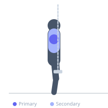
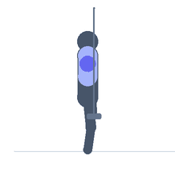

Exercise guide / Resistance Band Lateral Raise
Resistance Band Lateral Raise
The resistance band lateral raise provides an accommodating resistance curve that increases tension as the arm approaches the top of the movement, contrasting with dumbbells which lose most tension at the bottom. This increasing resistance toward shoulder height matches the medial deltoid's strength curve more closely, creating a unique training stimulus for the lateral head. It is particularly useful for home training, travel workouts, or as a high-rep finisher after dumbbell lateral raises.
Primary muscles
deltoid lateral
Secondary muscles
deltoid anterior
trapezius upper
Equipment
Resistance Band (Loop / Mini Band)


Starting position
- Stand on the center of a resistance band. Hold one end in each hand with a neutral grip. Arms at the sides, slight elbow bend.
Setup
- Adjust the starting tension by standing on more or less of the band. The resistance increases through the range of motion — this is the key difference from dumbbells.
Steps
- Step 1: Stand on the band, one end per hand, arms at the sides.
- Step 2: Raise both arms out to the sides in a lateral arc.
- Step 3: Raise until arms are at or slightly above shoulder height.
- Step 4: Pause briefly at the top.
- Step 5: Lower under control, resisting the band tension on the way down.
Coaching cues
- Increasing tension is the advantage here — use it
- Slow descent
- Lead with the elbows
Breathing
- Exhale on the raise, inhale on the descent.
Range of motion
- Starting position (arms at sides) to shoulder height.
Tempo
- 2-1-3-0
Common mistakes
- Releasing tension at the bottom — maintain a slight pull at all times
- Shrugging the traps as the arms rise
Safety
- Ensure the band is secured under the feet before beginning
Training
- hypertrophy: 12–20 reps
- hypertrophy: 3–4 sets
- Rest: {'hypertrophy': 60}